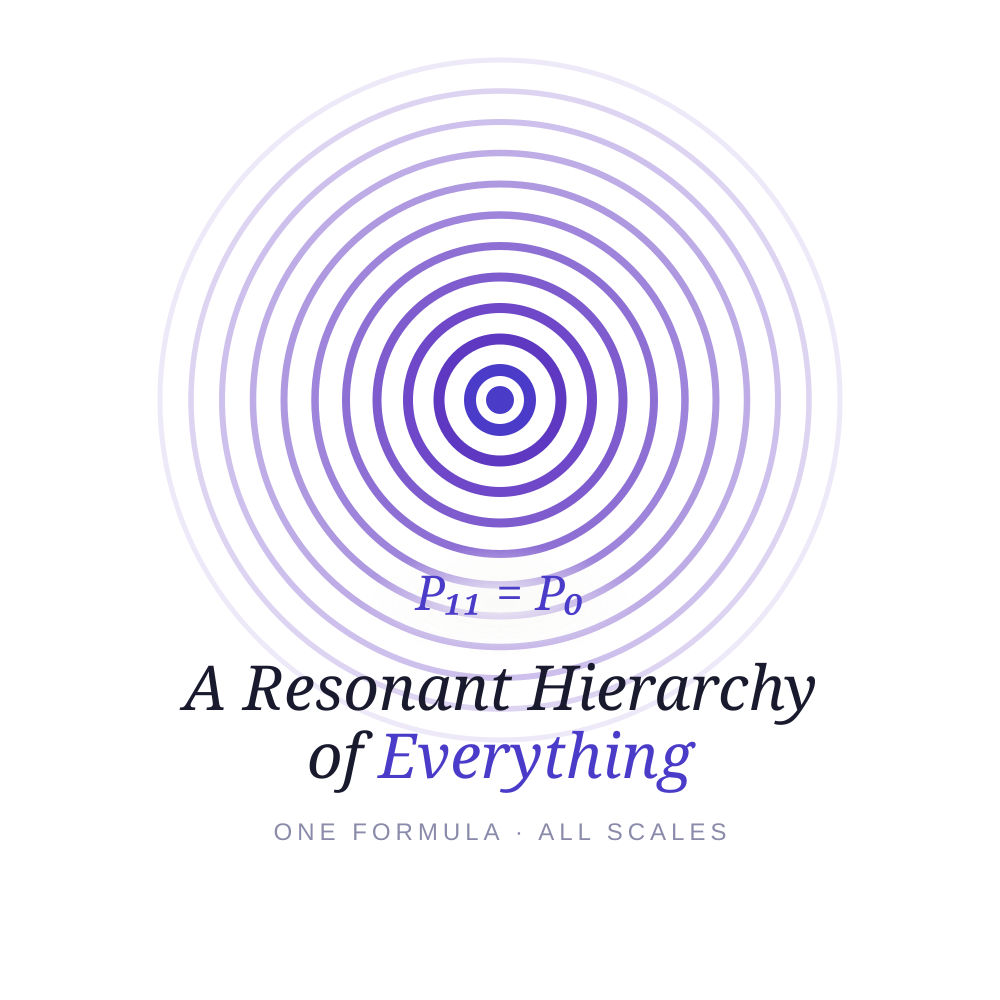

"The most incomprehensible thing about the universe is that it is comprehensible."
— Albert Einstein

What this is
A personal conceptual exploration proposing that all levels of reality emerge through one recursive formula.
Not a finished theory. The mathematics is incomplete. An invitation to think and to critique.
For as long as humans have looked at the sky, they have asked why. Why does an apple fall? Why does the sun rise? Why is there something rather than nothing? Every civilisation built its own answer — myth, philosophy, mathematics. And with each answer, new questions emerged, deeper, stranger, harder.
Newton gave us gravity as a force. Einstein showed it was the curvature of space itself. Planck and Bohr revealed that at the smallest scales, nature speaks in quanta — discrete packets, not continuous flows. Each revolution dissolved an old mystery and unveiled a deeper one beneath it.
Yet a fundamental tension remains. The equations that govern the very small and the equations that govern the very large refuse to speak to each other. Quantum mechanics and general relativity are each extraordinarily precise within their domains — and mutually incompatible at their boundaries. The Standard Model catalogues matter with stunning accuracy but cannot tell us why the electron has the mass it has, why there are exactly three generations of particles, or why gravity is so incomparably weaker than all other forces.
What follows is a conceptual exploration — one person's attempt to look at reality as a single recursive structure in which each level of organisation emerges from the one below it. The idea is my own. The development was done in collaboration with AI. The mathematics is incomplete, and I know it.
The core conjecture: at every level of reality, the same structure appears — objects P, connections C, and emergent properties E. The hypothesis is that Eₙ = ∂Cₙ₋₁/∂Pₙ — the properties of each level might be understood as what the previous level's connections distinguish about the current level's objects. This gave qualitatively interesting results for levels 2–7, but has not been formally proved.
A conceptual sketch of how this framework applies at each scale. These descriptions are not mathematical derivations. Click any level to expand.
Some things that emerged from exploring this framework. The left column contains conceptual ideas that follow from the logic of the model. The right column contains numerical observations found by pattern matching — they may be coincidental and require independent verification.
These are the main gaps — some specific to this framework, some open problems in all of modern physics.
Questions, critique, ideas — all welcome. This is a work in progress and every perspective matters.